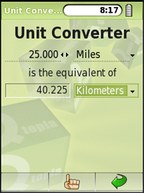
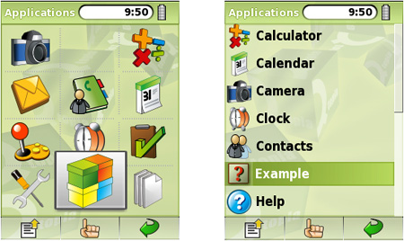

Since Qt/Embedded Linux offers the same API as the desktop editions of Qt, any standard Qt application can be recompiled to run on Qt/Embedded Linux. However, in practice, it is usually wise to create dedicated applications that account for the smaller screens, limited (or non-existent) keyboards, and resource limits that are typical of the small devices that run Qt/Embedded Linux. Furthermore, Qtopia provides additional libraries with features specific to mobile devices that we might want to use in our Qt/Embedded Linux applications.
Before we can start writing applications that make use of the Qtopia APIs, we must build and install the Qtopia SDK, including its own separate copy of Qt/Embedded Linux. Here we are assuming the use of the Qtopia Open Source Edition version 4.2, which includes almost everything in the Qtopia Phone Edition.
Building Qtopia is different from standard Unix practice, because Qtopia should not be built inside its source directory. For example, if we download the package qtopia-opensource-src-4.2.4.tar.gz to our $HOME/downloads directory, we would prepare to build Qtopia as follows:
cd $HOME/downloads gunzip qtopia-opensource-src-4.2.4.tar.gz tar xvf qtopia-opensource-src-4.2.4.tar
Now we must make a directory in which Qtopia will be built, for example:
cd $HOME mkdir qtopia
For convenience, the documentation recommends setting up the QPEDIR environment variable. For example:
export QPEDIR=$HOME/qtopia
Here we have assumed the use of the Bash shell. Now we are ready to build Qtopia:
cd $QPEDIR $HOME/downloads/qtopia-opensource-src-4.2.4/configure make make install
We haven't specified any options to configure, but you might wish to. Run configure -help to see what options are available.
After installation, all the Qtopia files will be in $QPEDIR/image, and all the files created by the user as a result of interacting with Qtopia will be in $QPEDIR/home. In Qtopia-speak, an "image" is a Qtopia file system that resides on a desktop computer and is used by the Qtopia environment when it is run in the virtual framebuffer.
Qtopia provides its own comprehensive documentation set, and it is well worth becoming familiar with it since Qtopia offers many classes that are not available (or relevant to) the desktop editions of Qt. The starting point is $QPEDIR/doc/html/index.html.
Once building and installing are complete, we can do an initial test by running $QPEDIR/scripts/runqtopia. This script launches the virtual framebuffer with a special skin and qpe, the Qtopia environment that contains the Qtopia application stack. It is possible to start the virtual framebuffer and the Qtopia environment separately, but then we have to start them in the correct order. If we inadvertently start qpe first, Qtopia will write to the X11 framebuffer, which at best will corrupt the screen. The runqtopia script can be executed with -help to see the list of command-line options it supports. These include -skin, with a list of skins to choose from.
The virtual framebuffer has a context menu that can be popped up by right-clicking anywhere except the Qtopia area. The menu lets us adjust the display and terminate Qtopia.
Now that we have Qtopia running in a virtual framebuffer, we can build one of the supplied example applications, just to see how the process works. Then, we will create a very simple application from scratch.
Change directory to $QPEDIR/examples/application. Qtopia has its own version of qmake called qtopiamake, located in $QPEDIR/bin. Run this to create a makefile, and then run make. This will create an executable called example. Now run make install; this will copy example (and some other files) into Qtopia's image directory. Now, if we terminate Qtopia and then start it again, using runqtopia, our new "Example" application will be available. To run the example, click the 'Q' button that is in the middle at the bottom of the Qtopia area, then click the Packages icon (the "boxes" icon, just above the pointing hand), and then click "Example" (see Figure 24.3).
We will finish this section by creating a small but useful Qtopia application from scratch, since there are a few details that we must be aware of. The application is called Unit Converter and is shown in Figure 24.2. It only uses the Qt API and therefore has few surprises. In the next section, we will create a more complex example that uses some of the Qtopia-specific APIs.

The Unit Converter application will be made from three files: main.cpp, unitconverter.h, and unitconverter.cpp. Create a new directory called unitconverter, then cd into it and create the .cpp and .h files as empty files. Now run
qtopiamake -project
to produce a .pro file. The file will look something like this:
qtopia_project(qtopia app)
TARGET = unitconverter
CONFIG += qtopia_main no_quicklaunch
HEADERS += unitconverter.h
SOURCES += main.cpp \
unitconverter.cpp
pkg.domain = noneEven if we wrote the code, built the executable, and installed it, it would not appear in Qtopia's list of applications. To achieve that, we must specify where the application's pictures are, where its .desktop file is, and where that should go. It is also good practice to provide some packaging information. For these reasons, we hand-edit the .pro file so that it now looks like this:
qtopia_project(qtopia app)
TARGET = unitconverter
CONFIG += qtopia_main no_quicklaunch
HEADERS += unitconverter.h
SOURCES += main.cpp \
unitconverter.cpp
INSTALLS += desktop pics
desktop.files = unitconverter.desktop
desktop.path = /apps/Applications
desktop.hint = desktop
pics.files = pics/*
pics.path = /pics/unitconverter
pics.hint = pics
pkg.name = unitconverter
pkg.desc = A program to convert between various units of measurement
pkg.version = 1.0.0
pkg.domain = window
The .pro file now contains an INSTALLS entry that says that the application's .desktop file and pictures must be installed in addition to the executable when we run make install.
By convention, pictures are stored in a pics subdirectory, and the pics.xxx entries in the .pro file specify where the source pictures are located and where they should be installed. The desktop.xxx entries specify the name of the application's .desktop file and where it should be installed. Installing it in /apps/Applications ensures that it appears in the list of applications shown when the user clicks the Packages icon. When the application is run on a desktop machine, absolute paths such as /apps/Applications and /pics/expenses are actually relative to Qtopia's image directory (with apps being replaced by bin).
The unitconverter.desktop file provides some basic information about the application. For our purposes, it is used to ensure that the application shows up in the list of applications. This is the complete file:
[Desktop Entry] Comment[]=A program to convert between various units of measurement Exec=unitconverter Icon=unitconverter/Example Type=Application Name[]=Unit Converter
The information we have provided is only a subset of what can be specified. For example, we can provide information about translations. Notice that the icon has no file extension, such as .png; we leave the Qtopia resource system to find and show the appropriate picture.
So far, we have seen a special and manually edited .pro file and a .desktop file. We must do just one more Qtopia-specific thing, and then we can write unitconverter.h and unitconverter.cpp using standard Qt in the standard way. For Qtopia, we must follow a particular idiom to hook into the rest of the environment; the complete main.cpp is reduced to just these lines:
#include <QtopiaApplication>
#include "unitconverter.h"
QTOPIA_ADD_APPLICATION("UnitConverter", UnitConverter)
QTOPIA_MAINThe name of the main window's class, included from unitconverter.h, is UnitConverter. Used in conjunction with qtopiamake and the unitconverter.h and unitconverter.cpp files, we can produce a Qtopia application that will run in the Qtopia environment. The main() function is defined by the QTOPIA_MAIN macro.
Since the application, apart from main.cpp, uses only standard Qt classes, it could also be compiled and run as a normal Qt application. To do this, we would need to use the standard qmake and change main.cpp to this:
#include <QApplication>
#include "unitconverter.h"
int main(int argc, char *argv[])
{
QApplication app(argc, argv);
UnitConverter converter;
converter.show();
return app.exec();
}In addition, we would have to comment out the qtopia_project() line in the .pro file.
For applications that need only Qt/Embedded Linux, it is often more convenient to develop them as standard Qt applications, perhaps with an explicit resize() of the main window to the dimensions of a phone or PDA, and turn them into Qtopia applications when they are ready for alpha testing. Alternatively, we could have two different main.cpp files, perhaps main_desktop.cpp and main_qtopia.cpp, and two .pro files.
Most of the code for the Unit Converter application is similar to that in the other Qt examples shown throughout the book, so we will not review it here.
To test the application, we must run make, then make install, and then runqtopia. Once Qtopia is running in the virtual framebuffer, we can click the 'Q' button, then the Packages icon, then "Unit Converter". After this, we can exercise the application by changing the amount and by selecting different units in the comboboxes.
Creating Qtopia applications is not very different from creating conventional Qt applications, apart from some initial setup differences (the special .pro file and the .desktop file) and using qtopiamake instead of qmake. Testing embedded applications is reasonably easy since they can be built, installed, and then run from within the virtual framebuffer. As for the applications themselves, although they can simply be conventional Qt applications, in practice it is usually better to write specifically with the limitations of the embedded environment in mind and to use the Qtopia-specific APIs to ensure that they integrate well with the rest of the Qtopia application stack.